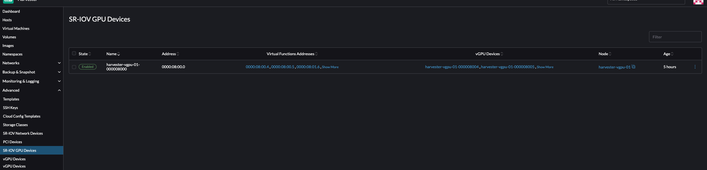
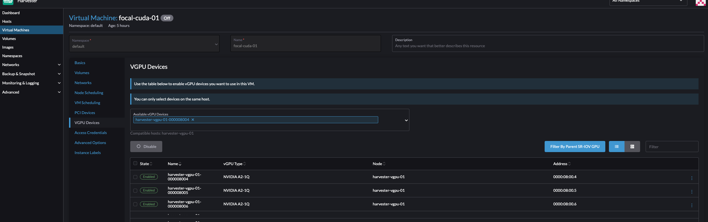

vGPU Support
SUSE Virtualization is capable of sharing NVIDIA GPU support for Single Root IO Virtualization (SR-IOV). This additional capability, which is provided by the pcidevices-controller add-on, leverages sriov-manage for GPU management.
To determine if your GPU supports SR-IOV, check the device documentation. For more information about creating an NVIDIA vGPU that supports SR-IOV, see the NVIDIA documentation.
You must enable the nvidia-driver-toolkit add-on to be able to manage the lifecycle of vGPUs on GPU devices.
Usage
-
On the UI, go to Advanced → SR-IOV GPU Devices and verify the following:
-
GPU devices have been scanned.
-
An associated
sriovgpudevices.devices.harvesterhci.ioobject has been created.
-
-
Locate the device that you want to enable, and then select ⋮ → Enable.
 -
Go to the vGPU Devices screen and check the associated
vgpudevices.devices.harvesterhci.ioobjects.Allow some time for the pcidevices-controller to scan the vGPU devices and for the SUSE Virtualization UI to display the device information.

-
Select a vGPU and configure a profile.

The list of profiles depends on the GPU and the underlying /sys tree of the host. For more information about the available profiles and their capabilities, see the NVIDIA documentation.
After you select the first profile, the NVIDIA driver automatically configures the profiles available for the remaining vGPUs.
-
Attach the vGPU to a new or existing VM.
Once a vGPU has been assigned to a VM, it may not be possible to disable the VM until the vGPU is removed.
Limitations
Attaching Multiple vGPUs
Attaching multiple vGPUs to a VM may fail for the following reasons:
-
Not all vGPU profiles support attachment of multiple vGPUs. The NVIDIA documentation lists the vGPU profiles that support this feature. For example, if you use NVIDIA A2 or A16 GPUs, note that only Q-series vGPUs allow you to attach multiple vGPUs.

-
Only 1 GPU device in the VM definition can have
ramFBenabled. To attach multiple vGPUs, you must edit the VM configuration (in YAML) and addvirtualGPUOptionsto all non-primary vGPU devices.virtualGPUOptions: display: ramFB: enabled: falseRelated issue: https://github.com/harvester/harvester/issues/5289
Cap on Usable vGPUs
When vGPU support is enabled on a GPU, the NVIDIA driver creates 16 vGPU devices by default. After you select the first profile, the NVIDIA driver automatically configures the profiles available for the remaining vGPUs.
The profile used also dictates the maximum number of vGPUs available for each GPU. Once the maximum is exhausted, no profiles can be selected for the remaining vGPUs and those devices cannot be configured.
Example (NVIDIA A2 GPU):
If you select the NVIDIA A2-4Q profile, you can only configure 4 vGPU devices. Once those devices are configured, you cannot select any profiles for the remaining vGPUs.

Technical Deep Dive
pcidevices-controller introduces the following CRDs:
-
sriovgpudevices.devices.harvesterhci.io
-
vgpudevices.devices.harvesterhci.io
On boot, pcidevices-controller scans the host for NVIDIA GPUs that support SR-IOV vGPU devices. When such devices are found, they are represented as a CRD.
Example:
apiVersion: devices.harvesterhci.io/v1beta1
kind: SRIOVGPUDevice
metadata:
creationTimestamp: "2024-02-21T05:57:37Z"
generation: 2
labels:
nodename: harvester-kgd9c
name: harvester-kgd9c-000008000
resourceVersion: "6641619"
uid: e3a97ee4-046a-48d7-820d-8c6b45cd07da
spec:
address: "0000:08:00.0"
enabled: true
nodeName: harvester-kgd9c
status:
vGPUDevices:
- harvester-kgd9c-000008004
- harvester-kgd9c-000008005
- harvester-kgd9c-000008016
- harvester-kgd9c-000008017
- harvester-kgd9c-000008020
- harvester-kgd9c-000008021
- harvester-kgd9c-000008022
- harvester-kgd9c-000008023
- harvester-kgd9c-000008006
- harvester-kgd9c-000008007
- harvester-kgd9c-000008010
- harvester-kgd9c-000008011
- harvester-kgd9c-000008012
- harvester-kgd9c-000008013
- harvester-kgd9c-000008014
- harvester-kgd9c-000008015
vfAddresses:
- "0000:08:00.4"
- "0000:08:00.5"
- "0000:08:01.6"
- "0000:08:01.7"
- "0000:08:02.0"
- "0000:08:02.1"
- "0000:08:02.2"
- "0000:08:02.3"
- "0000:08:00.6"
- "0000:08:00.7"
- "0000:08:01.0"
- "0000:08:01.1"
- "0000:08:01.2"
- "0000:08:01.3"
- "0000:08:01.4"
- "0000:08:01.5"
When a SRIOVGPUDevice is enabled, the pcidevices controller works with the nvidia-driver-toolkit daemonset to manage the GPU devices.
On subsequent scan of the /sys tree by the pcidevices, the vGPU devices are scanned by the pcidevices controller and managed as VGPUDevices CRD
NAME ADDRESS NODE NAME ENABLED UUID VGPUTYPE PARENTGPUDEVICE harvester-kgd9c-000008004 0000:08:00.4 harvester-kgd9c true dd6772a8-7db8-4e96-9a73-f94c389d9bc3 NVIDIA A2-4A 0000:08:00.0 harvester-kgd9c-000008005 0000:08:00.5 harvester-kgd9c true 9534e04b-4687-412b-833e-3ae95b97d4d1 NVIDIA A2-4Q 0000:08:00.0 harvester-kgd9c-000008006 0000:08:00.6 harvester-kgd9c true a16e5966-9f7a-48a9-bda8-0d1670e740f8 NVIDIA A2-4A 0000:08:00.0 harvester-kgd9c-000008007 0000:08:00.7 harvester-kgd9c true 041ee3ce-f95c-451e-a381-1c9fe71918b2 NVIDIA A2-4Q 0000:08:00.0 harvester-kgd9c-000008010 0000:08:01.0 harvester-kgd9c false 0000:08:00.0 harvester-kgd9c-000008011 0000:08:01.1 harvester-kgd9c false 0000:08:00.0 harvester-kgd9c-000008012 0000:08:01.2 harvester-kgd9c false 0000:08:00.0 harvester-kgd9c-000008013 0000:08:01.3 harvester-kgd9c false 0000:08:00.0 harvester-kgd9c-000008014 0000:08:01.4 harvester-kgd9c false 0000:08:00.0 harvester-kgd9c-000008015 0000:08:01.5 harvester-kgd9c false 0000:08:00.0 harvester-kgd9c-000008016 0000:08:01.6 harvester-kgd9c false 0000:08:00.0 harvester-kgd9c-000008017 0000:08:01.7 harvester-kgd9c false 0000:08:00.0 harvester-kgd9c-000008020 0000:08:02.0 harvester-kgd9c false 0000:08:00.0 harvester-kgd9c-000008021 0000:08:02.1 harvester-kgd9c false 0000:08:00.0 harvester-kgd9c-000008022 0000:08:02.2 harvester-kgd9c false 0000:08:00.0 harvester-kgd9c-000008023 0000:08:02.3 harvester-kgd9c false 0000:08:00.0
When a user enables and selects a profile for the VGPUDevice the pcidevices controller sets up the device and sets up the correct profile on the said device.
apiVersion: devices.harvesterhci.io/v1beta1
kind: VGPUDevice
metadata:
creationTimestamp: "2024-02-26T03:04:47Z"
generation: 8
labels:
harvesterhci.io/parentSRIOVGPUDevice: harvester-kgd9c-000008000
nodename: harvester-kgd9c
name: harvester-kgd9c-000008004
resourceVersion: "21051017"
uid: b9c7af64-1e47-467f-bf3d-87b7bc3a8911
spec:
address: "0000:08:00.4"
enabled: true
nodeName: harvester-kgd9c
parentGPUDeviceAddress: "0000:08:00.0"
vGPUTypeName: NVIDIA A2-4A
status:
configureVGPUTypeName: NVIDIA A2-4A
uuid: dd6772a8-7db8-4e96-9a73-f94c389d9bc3
vGPUStatus: vGPUConfigured
The pcidevices controller also runs a vGPU device plugin, which advertises the details of the various vGPU profiles to the kubelet. This is then used by the k8s scheduler to place the VM’s requesting vGPU’s to the correct nodes.
(⎈|local:harvester-system)➜ ~ k get nodes harvester-kgd9c -o yaml | yq .status.allocatable cpu: "24" devices.kubevirt.io/kvm: 1k devices.kubevirt.io/tun: 1k devices.kubevirt.io/vhost-net: 1k ephemeral-storage: "149527126718" hugepages-1Gi: "0" hugepages-2Mi: "0" intel.com/82599_ETHERNET_CONTROLLER_VIRTUAL_FUNCTION: "1" memory: 131858088Ki nvidia.com/NVIDIA_A2-4A: "2" nvidia.com/NVIDIA_A2-4C: "0" nvidia.com/NVIDIA_A2-4Q: "2" pods: "200"
The pcidevices controller also setups the integration with kubevirt and advertises the vGPU devices as externally managed devices in the Kubevirt CR to ensure that the VM can consume the vGPU.